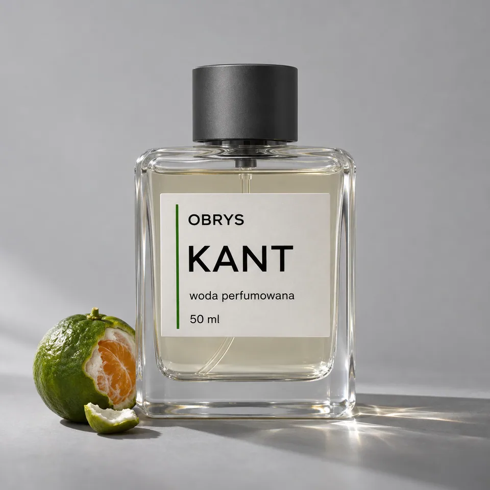
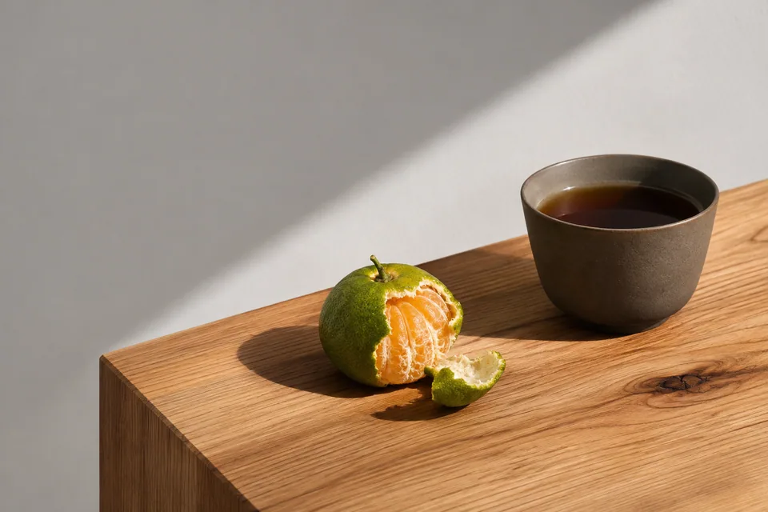
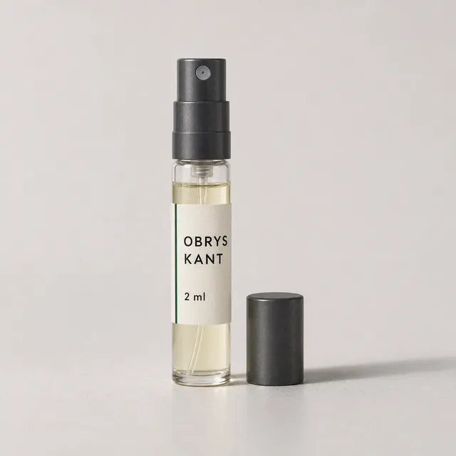

TWÓRCA FORMUŁY
[DO UZUPEŁNIENIA: Imię i nazwisko perfumiarza]
Kompozycja powstała w toku [DO UZUPEŁNIENIA: liczba] prób laboratoryjnych — pracowaliśmy nad utrzymaniem ostrości otwarcia bez podbijania go cukrowymi stabilizatorami.
OBRYS / KANT / 18% EDP UNISEX · PRZEDSPRZEDAŻ 03.2027

KANT zderza cierpką zieloną mandarynkę z suchym drewnem i chłodnym przyprawowym akcentem. Wytrawna woda perfumowana 18% EDP — bez lukru, bez ciężkiego ogona.
Próbkę wysyłamy od ręki z voucherem −19 zł na pełny flakon 50 ml (ważnym 30 dni).
ARCHITEKTURA ZAPACHU
KANT nie przykrywa skóry słodką mgłą — przechodzi od zimnego, olejkowego impulsu do matowego, rozgrzanego drewna. Wszystkie etapy widać od razu, tak jak pracują w czasie.
CHŁODNO / CIERPKO / OLEJKOWO
Temperatura spada jak przy przełamaniu niedojrzałej skórki między palcami. Pierwszy impuls jest szorstki, gorzkawy i chłodny; kardamon ostrzy kontur, zanim cytrus zdąży się zaokrąglić.
MATOWO / TANINOWO / PYLIŚCIE
Lotna świeżość wyparowuje i odsłania suche drewno w parze z cierpką, lekko dymną herbatą. Faktura staje się papierowa i uporządkowana — jak zapach świeżo struganej deski w chłodnym pokoju.
CIEPŁO / MINERALNIE / BLISKOSKÓRNIE
Ostra krawędź mięknie, lecz nie przechodzi w cukier. Korzenna, lekko ziemista wetyweria trzyma w ryzach mineralną ambrę — zostawia cichy, rozgrzany ślad wyczuwalny z bliskiej odległości.
Opis oddaje fizyczny przebieg kompozycji na skórze. Pełny wykaz składników INCI znajduje się w sekcji oferty.
PROFIL SENSORYCZNY I KONTEKST NOSZENIA
Cierpka skórka, taniny herbaty i mineralna wetyweria od pierwszej do ostatniej godziny.
Śladowa, wynikająca wyłącznie z ambry w bazie — bez wanilii i deserowych akordów.
Wyraźna przez pierwszy kwadrans, potem pracuje spokojnie w strefie ramion i kołnierza.
Zimna, zielona i szorstka w otwarciu; wycisza się w stronę czystego, przewiewnego cedru.
Powściągliwe, mineralno-żywiczne tło, które ogrzewa skórę bez ciężkiego dymu.
KONTEKST NOSZENIA
Dla kogo KANT nie jest: jeśli szukasz waniliowego ogona, słodkiego bursztynu albo projekcji wyczuwalnej z drugiego końca ulicy, wybierz inną kompozycję.

IDEA OBRYS / FORMA I MATERIAŁ
Punkt wyjścia dla OBRYS był czysto wizualny: boczne światło tnące krawędź stołu i wyraźna granica między płaszczyznami. Flakon powtarza tę geometrię — grube, przezroczyste szkło o prostym przekroju, ciężki grafitowy korek i niepowlekany, matowy papier etykiety.
Nie korygujemy koloru płynu barwnikami: jasnosłomkowy odcień pochodzi wyłącznie z surowców zapachowych. Drobnomgiełkowy atomizer rozprasza kompozycję równą, suchą chmurą bez pojedynczych kropel.

JEDEN ZNAK. PROSTA FORMA.
Jedynym akcentem barwnym całego obiektu jest pionowa zielona linia przecinająca matową etykietę. Zastępuje ornament, wyznacza proporcję frontu i pozwala rozpoznać serię z daleka bez ciężkiego brandingu.
Kartonowe pudełko zewnętrzne wykonano z nielaminowanego papieru barwionego w masie, z dokładnym dopasowaniem wkładki do przekroju szkła.
TWÓRCA FORMUŁY
Kompozycja powstała w toku [DO UZUPEŁNIENIA: liczba] prób laboratoryjnych — pracowaliśmy nad utrzymaniem ostrości otwarcia bez podbijania go cukrowymi stabilizatorami.
LABORATORIUM I MACERACJA
Rozlew i maceracja ([DO UZUPEŁNIENIA: np. 6 tygodni]) odbywają się w Polsce / UE w małych, numerowanych partiach pod stałą kontrolą stabilności barwy i zapachu.
STANDARD FORMUŁY
Stężenie olejków na poziomie wody perfumowanej, alkohol pochodzenia roślinnego, formuła wegańska bez składników odzwierzęcych oraz pełna dokumentacja bezpieczeństwa UE.
NOTATKI Z TESTÓW W CIEMNO · PIERWSZA PARTIA [DO WERYFIKACJI]
Zanim zamknęliśmy skład przed produkcją, przekazaliśmy nieoznakowane fiolki [DO WERYFIKACJI: 24 osobom] na tydzień codziennego noszenia. Bez ocen gwiazdkowych — poniżej cztery konkretne zapisy z dzienników testowych.
01 / OTWARCIE VS. PO 3 GODZINACH
„Pierwsze dziesięć minut to czysty chłód i lekka goryczka — jak rozgnieciona skórka przed obraniem owocu. Po trzech godzinach cytrus znika całkowicie, a na nadgarstku zostaje matowy cedr z ciepłym, mineralnym spodem.”
02 / CODZIENNE NOSZENIE W PRACY
„Nosiłam KANT przez cztery dni w biurze i na spotkaniach z klientami. Nie męczy przy monitorze i nie wypełnia całej sali, ale dwa razy ktoś zapytał o ten czysty, herbaciany ślad przy podaniu ręki.”
03 / PERSPEKTYWA OSOBY UNIKAJĄCEJ SŁODYCZY
„Większość perfum z ambrą w bazie po godzinie zamienia się u mnie w lepki syrop. Tutaj baza pozostaje zaskakująco wytrawna — czuć ciepło skóry i korzenną wetywerię, ale zero cukru i wanilii.”
04 / ZASTRZEŻENIE — ZASIĘG PROJEKCJI
„Jeśli ktoś lubi perfumy ogoniaste, które słychać w windzie jeszcze pięć minut po wyjściu, będzie rozczarowany. Po pierwszej godzinie KANT siedzi blisko skóry i kołnierza — dla mnie to zaleta, ale warto o tym wiedzieć z góry.”
WYBIERZ KANT · PRZEDSPRZEDAŻ I PRÓBKA
Zacznij od próbki 2 ml z wysyłką w 24–48 h i odlicz jej pełną cenę przy zakupie flakonu 50 ml, albo zarezerwuj pełną pojemność w przedsprzedaży z darmową dostawą.
PRZEDSPRZEDAŻ · WYSYŁKA OD 03.2027
Woda perfumowana unisex · 18% EDP
Zielona mandarynka, kardamon, cedr, czarna herbata i mineralno-ambrowa baza z wetywerią.
W pudełku: szklany flakon 50 ml z drobnomgiełkowym atomizerem i grafitowym korkiem.
249 zł50 ml · 4,98 zł/ml · dostawa 0 zł

DOSTĘPNA OD RĘKI · WYSYŁKA W 24 H
Test bez ryzyka przed wyborem 50 ml
Ta sama formuła 18% EDP w szklanej fiolce z atomizerem (~30 aplikacji). Do paczki i e-maila dołączamy kod −19 zł na pełny flakon 50 ml, ważny 30 dni.
Sprawdź zapach przez kilka dni w różnych warunkach — przy zamówieniu flakonu koszt próbki zwraca się w całości.
19 zł2 ml · 9,50 zł/ml · dostawa 12 zł
PYTANIA PRZED WYBOREM
Otwarcie zbudowane na lotnych olejkach cytrusowych utrzymuje się wyraźnie przez pierwsze 15–20 minut — to naturalna cecha cytrusów bez syntetycznych, cukrowych przedłużaczy. Następnie zapach przechodzi w cedr i czarną herbatę, a po ok. 2 godzinach układa się bliżej skóry w drzewno-ambrowej bazie z wetywerią. Deklarowany czas wyczuwalności: [WPISZ WYNIK TESTÓW NA SKÓRZE: np. 6–8 godzin na skórze, dłużej na wełnie i bawełnie].
Flakon 50 ml zamawiasz w przedsprzedaży z planowaną wysyłką od 03.2027 (InPost Paczkomat lub kurier, dostawa 0 zł — powyżej progu 200 zł). Próbkę 2 ml wysyłamy na bieżąco w 24–48 godzin roboczych (koszt dostawy 12 zł). Jeśli dodasz do koszyka oba warianty, próbkę nadamy od ręki, a flakon w terminie premiery.
Do każdej próbki 2 ml dołączamy jednorazowy kod rabatowy o wartości 19 zł (otrzymasz go mailem i na karcie w paczce). Kod obniża cenę flakonu 50 ml do 230 zł i zachowuje ważność przez 30 dni od zakupu próbki — daje spokojny czas na testy w zwykłych warunkach.
Tak — masz 14 dni kalendarzowych od odbioru paczki na odstąpienie od umowy i zwrot nieotwartego, fabrycznie zapieczętowanego flakonu 50 ml. Ze względów higienicznych nie przyjmujemy zwrotów produktów rozpieczętowanych po dostarczeniu, dlatego przed zakupem pełnej pojemności rekomendujemy próbkę 2 ml z voucherem.
KANT to woda perfumowana 18% EDP w formule wegańskiej, bez barwników. Produkt przechodzi pełną ocenę bezpieczeństwa (CPSR) zgodnie z rozporządzeniem (WE) nr 1223/2009. Pełny wykaz INCI oraz listę potencjalnych alergenów publikujemy w zakładce specyfikacji powyżej oraz na pudełku.
Nie — to kompozycja wytrawna, w której cierpkość cytrusa przechodzi w gorzkawą herbatę, cedr i mineralne tło bez wanilii czy cukru. KANT nie ma przypisanej płci (unisex) i sprawdza się u każdego, kto szuka chłodnej świeżości z wyraźnym drzewnym szkieletem.
OBRYS / KANT · 18% EDP
Flakon 50 ml — 249 zł (przedsprzedaż 03.2027, dostawa 0 zł) · Próbka 2 ml — 19 zł (wysyłka 24 h + voucher −19 zł)